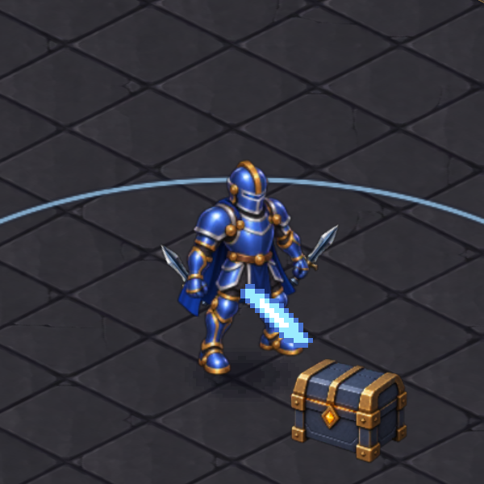
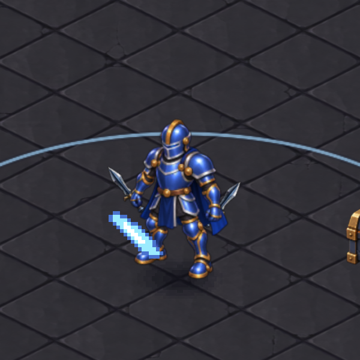
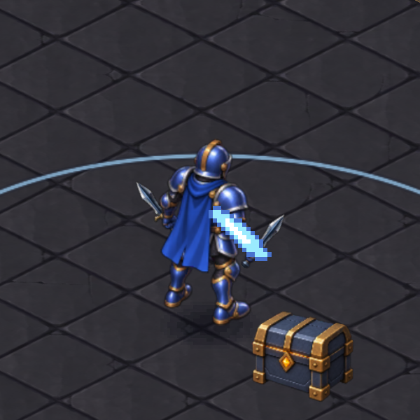
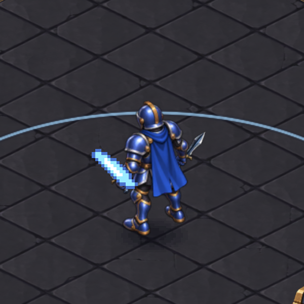
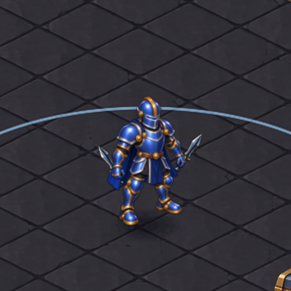
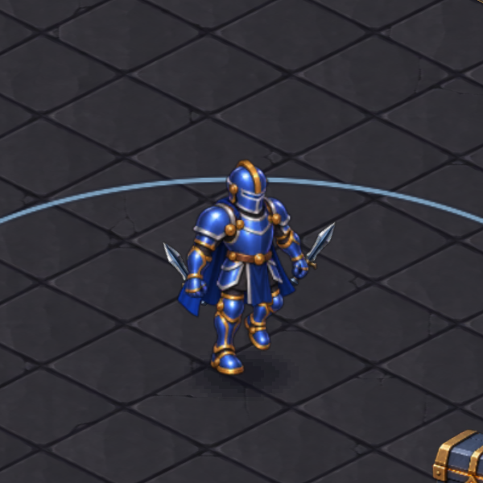

Bu görüntüler gerçek çalışan animasyondan alındı. Kabzalar el noktalarında kalıyor; saldırıda bıçaklar kısa bir açıyla dönüyor. İki el aynı ortak çizimi kullanıyor.






Büyük piksel darbe efekti hâlâ önceki görseli kullanıyor. Yeni kol çizimleri yerine mevcut gövdede kısa bir bilek hareketi var.
Test ve cihaz kayıtları